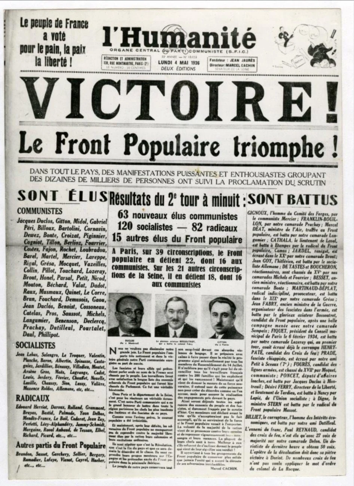

Publication d’archives
3 Mai 1936 - Victoire du Front populaire.
Date indiquée par Facebook · 3 mai 2022
Texte conservé avec la publication
Contexte du dossier
Le 3 mai 2022, la page rappelle la victoire du Front populaire de 1936 et annonce l’hommage à Pierre Sémard du 8 mai, devant la plaque de la gare de Niort, suivi d’une exposition fédérale. Le retour du 9 mai atteste la cérémonie et restitue une intervention sur le dirigeant communiste et syndical des cheminots, fusillé à Évreux le 7 mars 1942. Elle évoque son milieu ouvrier, son internationalisme et sa dernière lettre aux cheminots. L’hommage ne s’arrête pas au nom d’une rue ou d’une plaque : il cherche ce qui, dans cet engagement, peut encore éclairer les combats collectifs.

Sources
Archive rouge · export Facebook · AR-0002-FB-01892
À lire aussi · Marcel Paul, au-delà d’un nom de parking